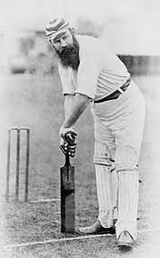

Sachin Tendulkar
Played 463 matches and made 185 consecutive ODI appearances. The second-youngest debutant in ODI cricket. Record for being the first batsman to score the most runs (200) in an ODI Innings. Scored the most runs in ODI cricket (18426 runs in 463 innings).
WG Grace
In his career in first-class cricket (1865–1908), Grace scored 54,896 runs, registered 126 centuries (100 runs in a single innings), and, as a bowler, took 2,809 wickets. In 84 matches for Gentlemen versus Players he amassed 6,000 runs and took 271 wickets.

Don Bradman
Bradman's career Test batting average of 99.94 has been cited as the greatest achievement by any sportsman in any major sport.